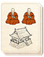
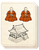

Requires
- Arts:
 

Enables
Effects
- Improves conversion to the clan religion (+2 religious zeal)
- +1 to clan-wide happiness
Description
The adoption of neo-confucianism as the state philosophy ensures a clan's people align their beliefs with that of the Daimyo. Confucian thought comes from China, and stresses the values sincerity and being true to oneself and nature in order to reach harmony with the world. There is a proper etiquette for every occasion, and observing this shows that the harmonious hierarchy of the world is understood and supported.
The Tokugawa Shogunate promulgated neo-confucianism as a way of reinforcing the stability of society and Japan. It was intended to guide everyone by showing everyone their place in the universal hierarchy: fathers, sons, lords, vassals, and even the peasants in their fields, would have their relationships codified into a harmonious whole. Tokugawa Ieyasu had unified the country, but he needed to show that he was adept in peace as in war. The Tokugawas chose to ignore the confucianism ideal of free speech, and permitted only one orthodox school of thought in order to maintain control over all aspects of Japanese life: moral duty and the law became one and the same. The country was unified, but at a cost in freedom of thought and innovation.